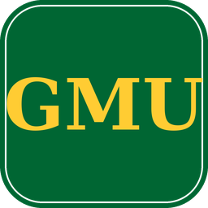
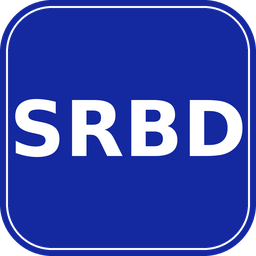
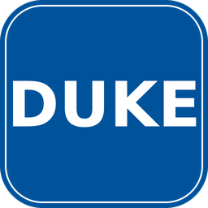

Provost's Postdoctoral Fellow
Aug 2026 – 2028
University of Notre Dame, Notre Dame, IN
- Research on safety-by-construction guardrails and multilingual program synthesis for Code LLMs, mentored by Prof. Joanna C. S. Santos.
Research and industry positions, teaching, and the students I have mentored.


